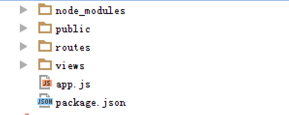
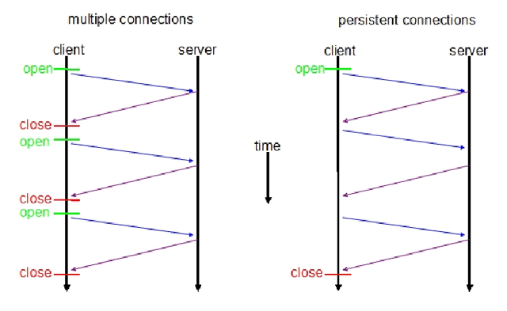
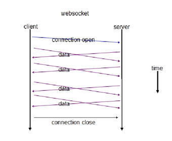
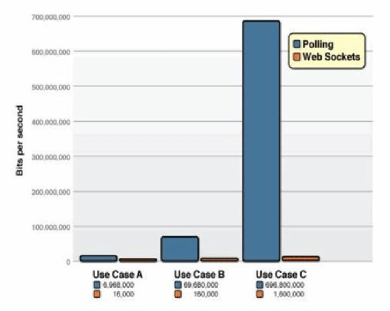

Nodejs + WebSocket
Express + socket.io
程仁 2015-07-13 丁香园
Nodejs + WebSocket
Express + socket.io
程仁 2015-07-13 丁香园
Node.js是一个可以快速构建网络服务及应用的平台。
<script type='text/javascript'>
//阻塞
get_a_request();//从请求列队中得到一个请求
handle_request();//处理这个请求，如：读写数据库，读文件，上床
feedback(); //返回处理结果
get_next_request();//从列队中获得下一个请求
//非阻塞
get_a_request();
handle_request(function(){//处理这个请求
feedback(); //等到处理完成后，返回处理结果
});
get_next_request();//从列队中获得下一个请求
</script>
var http = require("http");
http.createServer(function(request,response){
response.writeHead(200,{"Content-Type":"text/plain"});
response.end("Hello World\n");
}).listen(3456);
console.log("server running at 127.0.0.1:3456");
是一个简洁而灵活的 node.js Web应用框架
提供一系列强大特性帮助你创建各种Web应用

WebSocket是一种基于TCP链接的双工的通讯方式
轮询(polling)。轮询是在特定的的时间间隔(time interval)（如每1秒），由浏览器对服务器发出HTTP request，然后由服务器返回最新的数据给客服端的浏览器。
服务器可以
主动传送数据给客户端
大大减少长连接的请求头大小
 

适用于需要实时通信的场景
如：实时信息监控，即时消息传递，网页游戏，股票信息推送等等
| 浏览器 | 版本 |
|---|---|
| Chrome | 14+ |
| firefox | 6+ |
| IE | 10+ |
一个WebSocket库，包括了客户端的js和服务器端的nodejs
构建可以在不同浏览器和移动设备上使用的实时应用
自动根据浏览器从WebSocket、AJAX长轮询、Iframe流等等各种方式中选择最佳的方式来实现网络实时应用
//server code
var io = require('socket.io').listen(80);
io.sockets.on('connection', function (socket) {
socket.emit('news', { hello: 'world' });
socket.on('my other event', function (data) {
console.log(data);
});
});
//client code
<script src="/socket.io/socket.io.js"></script>
<script>
var socket = io.connect('http://localhost');
socket.on('news', function (data) {
console.log(data);
socket.emit('my other event', { my: 'data' });
});
</script>
var socket = io.connect('http://192.168.1.100:3001');
$('#_a').click(function() {
socket.emit('a', { text: 'a' });
});
$('#_d').click(function() {
socket.emit('d', { text: 'd' });
});
$('#_w').click(function() {
socket.emit('w', { text: 'w' });
});
$('#_s').click(function() {
socket.emit('s', { text: 's' });
});
$('#_q').click(function() {
socket.emit('q', { text: 'q' });
});
$('#_e').click(function() {
socket.emit('e', { text: 'e' });
});
//......
io.sockets.on('connection', function (socket) {
socket.on('a', function (data) {
socket.broadcast.emit('a', { text: 'a' });
});
socket.on('d', function (data) {
socket.broadcast.emit('d', { text: 'd' });
});
socket.on('s', function (data) {
socket.broadcast.emit('s', { text: 's' });
});
socket.on('w', function (data) {
socket.broadcast.emit('w', { text: 'w' });
});
socket.on('q', function (data) {
socket.broadcast.emit('q', { text: 'q' });
});
socket.on('e', function (data) {
socket.broadcast.emit('e', { text: 'e' });
});
var socket = io.connect('http://192.168.1.100:3001');
socket.on('w', function (data) {
android.translateZ(10);
});
socket.on('s', function (data) {
android.translateZ(-10);
});
socket.on('a', function (data) {
android.rotation.y += 0.25;
});
socket.on('d', function (data) {
android.rotation.y -= 0.25;
});
socket.on('q', function (data) {
android.translateY(+10);
});
socket.on('e', function (data) {
android.translateY(-10);
});
create PPT via html5slides